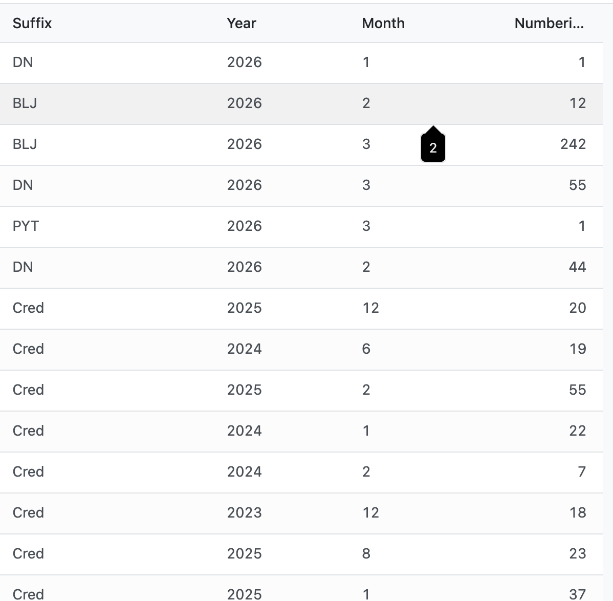

This addon provides a flexible and automated numbering system for documents such as invoices, purchase orders, and sales orders. It supports prefix, suffix, and sequence configuration per company or document type.

Example: INV26040001
For more details, please refer to the documentation here